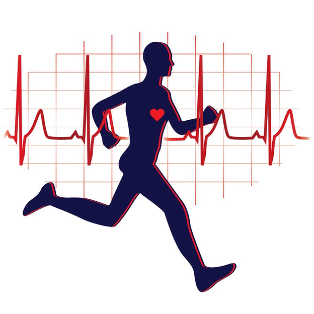

Физическая активность является ключевым элементом здорового образа жизни. Она помогает поддерживать физическую форму, улучшает общее состояние организма и предотвращает различные заболевания.
Если вы новичок, начните с небольших нагрузок и постепенно увеличивайте интенсивность. Примеры физических активностей:
Для получения дополнительных сведений о физических тренировках посетите:
